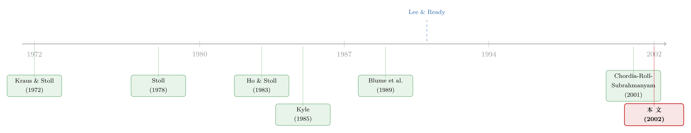

一百万股成交，到底是买，还是卖？——订单失衡里的市场密码
本文读的是 Chordia, Roll & Subrahmanyam (2002, JFE)：他们第一次为整个 NYSE 市场算出了逐日的订单失衡 (order imbalance)——买单减卖单——并发现，投资者在总体上是「逆向交易者」（跌后抢买、涨后卖出）；无论买卖哪一边过度，都会让市场流动性变差；而且即便控制住成交量与流动性之后，订单失衡仍然强烈地左右着当天的市场收益。
1 一百万股，藏着一个被忽略的问题
先做一道思考题。
报盘上跳出来「成交量：一百万股」。这一百万股，到底意味着什么？
它可能是一百万股被砸给了做市商——有人在不计成本地出货；也可能恰好相反，是一百万股被从做市商手里抢走——有人在疯狂扫货；当然，更常见的情形是大致对半：约 50 万股卖出、约 50 万股买入。
同样的「一百万股」，三种情形，对价格和流动性的含义却南辕北辙。可是在过去几十年里，几乎所有研究「交易活动与股价」的文献，用的尺子都只有一把——成交量 (volume)（综述可见 Karpoff, 1987）。成交量天然是个绝对值，它把「买」和「卖」揉成一团，注定要藏起交易中最关键的那部分信息：方向。
于是本文抛出一个朴素却被长期搁置的问题：如果我们不看成交量，而去看买单与卖单的差额呢？作者给它起了个名字——订单失衡 (order imbalance)。
这是一篇 2002 年的「老」论文，但它定义的 OIBNUM（买方发起的成交笔数减去卖方发起的成交笔数）后来几乎成了整个微观结构与「订单流」文献的通用语言。读懂它，等于读懂了这条线的源头。
2 为什么是「方向」，而不是「数量」
直觉上，价格和流动性应该对更极端的订单失衡更敏感，而且这与成交量大小无关。作者给了两条理由。
第一条，信息。 一边倒的订单有时是私有信息 (private information) 的信号。按照经典的 Kyle (1985) 价格形成理论，知情交易者会把信息藏在订单流里，做市商无法分辨眼前这笔大买单是「噪声」还是「有人知道了什么」，只能通过加宽价差来自我保护——于是流动性下降，价格也可能被永久推动。
第二条，库存。 这一条更要紧，也是全文的灵魂。即便订单失衡纯属随机、毫无信息，一笔大的单边订单也会让做市商的库存 (inventory) 失衡：他要么被迫接下一大堆货，要么被掏空。库存模型——Stoll (1978a)、Ho and Stoll (1983)、Spiegel and Subrahmanyam (1995)——告诉我们，做市商会通过调整买卖报价来「纠偏」：库存堆积太多，他就把报价整体下移，鼓励别人来买、把货接走。
把这两条理由顺下去，一个完整的故事链就浮现了：订单失衡 → 库存失衡 → 做市商调价 → 价格压力 (price pressure) 与价差变化。而对整个市场而言，作者特别强调：总体层面的非对称信息「不太可能」是主因——你很难想象有人对「整个标普 500 指数」掌握内幕——所以库存范式 (inventory paradigm) 才是更有说服力的解释。这是全文反复回扣的那一个核心。
3 把上亿笔交易，一笔笔贴上「买」或「卖」的标签
想法很美，可有一道苦活挡在前面：交易数据库根本不记录谁是买方、谁是卖方。要研究订单失衡，你得把成千上万只股票、横跨十一年、上亿笔交易，一笔笔判定成「买方发起」还是「卖方发起」。
这正是为什么在本文之前，没人对一个宽截面、长样本做过这件事——大家只能在特定事件附近、或者很短的时间窗里小打小闹：Blume, MacKinlay and Terker (1989) 研究 1987 年 10 月股灾那两天，Lee (1992) 研究盈余公告附近，Hasbrouck and Seppi (2001) 也只覆盖了 30 只股票一年。
作者用的是 Lee and Ready (1991) 算法，逻辑其实很简单：
- 一笔成交，如果价格更靠近卖价 (ask)，就判为买方发起；更靠近买价 (bid)，就判为卖方发起。
- 如果正好落在买卖中点，就用「tick test」：看这笔之前的最后一次价格变动，若为正（上涨），判为买方发起，反之为卖方发起。
- 报价必须至少在成交前 5 秒就已存在。
当然，这样贴标签难免有误差，结果只是「估计值」。但 Lee and Radhakrishna (2000) 与 Odders-White (2000) 都验证过，这套算法足够准，不至于带来严重问题。
数据上，作者只取 NYSE 上属于标普 500 (S&P500) 的股票，样本期 1988–1998，共 2779 个交易日。对每个股票-日，他们算了三种口径的订单失衡：
OIBNUM：买方发起的笔数减卖方发起的笔数；OIBSH：买方买入的股数减卖方卖出的股数；OIBDOL：买方付出的金额减卖方收到的金额。
然后把它们按市值加权，聚合成「市场层面」的日度序列。为什么主回归只用 OIBNUM？因为股数会被拆股/并股污染，金额又夹带了价格水平——用一个含过去价格的变量去预测收益和流动性，容易给人误导。笔数最干净。三种口径的结论其实定性一致。
顺带一提：为什么选标普 500 收益作为被预测对象？因为它的日度一阶自相关系数只有 0.005（p = 0.78），高阶也几乎为零——它本身近乎随机游走，是一个故意挑出来的「难啃的硬骨头」。如果连这么「随机」的序列都能被订单失衡撬动，那才有说服力。
4 第一个发现：投资者，是一群「逆向者」
序列算出来了，第一个自然的问题是：到底是什么造成了订单失衡？
作者把日度 OIBNUM 对星期几虚拟变量、过去若干天「上涨部分」与「下跌部分」的收益、以及自身滞后项做回归（并用 Cochrane/Orcutt 校正一阶自相关）。
结果干净利落：在总体上，投资者是逆向交易者 (contrarians)——市场跌了之后他们买，涨了之后他们卖。而且这种逆向行为对下跌尤其显著：前一天若是下跌，Min(0, R_{t-1}) 的系数高达 −30.06，t 值 −17.70；这种反应能持续大约三天。
把这件事和上一节的「核心」连起来，你会会心一笑：标普 500 自己几乎是随机游走、毫无自相关，恰恰是因为有这样一群逆向者，在用反向订单把昨天的价格压力一点点抹平。库存范式的图景在这里第一次合拢——大的库存失衡发生后，做市商把报价摆到能吸引「对手方」的位置，而精明的交易者果然来了，价格压力被有效抵消。
回归里还冒出一个有趣的「周三效应」（系数 5.85，t = 2.33）。但作者很警觉：会不会只是因为周中本来交易就更活跃（Chordia et al., 2001 早已记录过这种周内规律）？于是他们把 OIBNUM 除以总成交笔数再回归——逆向模式纹丝不动，而星期几的季节性全部消失。结论很漂亮：所谓周内规律，不过是交易活动总量的规律，订单失衡本身没有真正的季节性。

5 第二个发现：买也好、卖也好，过度就伤流动性
接着，把镜头转向流动性。
作者用一个非线性设定，把市场平均报价价差的日度百分比变化，对这么几样东西回归：(1) 当天绝对订单失衡 |OIBNUM| 变化的一个 Box/Cox 变换，(2) 成交笔数的百分比变化，(3) 当天收益，(4) 当天市场波动（用 |S&P500| 度量）。注意——取绝对值是点睛之笔：它意味着我们不关心订单偏向买还是卖，只关心「偏得有多狠」。
为什么要非线性？因为理论没有给出函数形式，作者干脆让数据说话，用 Box/Cox 变换
$$ F(x) = \frac{x^{\lambda} - 1}{\lambda} $$
去估那个曲率参数 \(\lambda\)。最大似然估出来 \(\lambda = 3.19\)——介于三次方和四次方之间。换句话说，订单失衡越极端，对价差的边际伤害越是加速放大。这一项高度显著，t 值约 12。
直觉是什么？当订单集中砸向市场的某一侧时，做市商来不及在另一侧把报价跟上去，或来不及清空那一侧的限价订单簿，价差自然就被撑开。无论是疯狂扫货还是恐慌甩卖，只要是单边，流动性都会变差。这正是库存范式预测的样子。
这条「价差对绝对订单失衡呈凸性放大」的结论，和后来公司债、外汇等市场里发现的「单边冲击成本非线性」遥相呼应。关于做市商如何在库存压力下定价，可参见《做市商的价差里，藏着一份「到期日不确定」的期权》。
值得一提的是，即便订单失衡已经被纳进来，成交笔数的变化仍然单独地、显著地推高价差（系数 0.036，t = 10.80）。这有点出乎意料。作者诚实地给了几种可能：要么是订单失衡变量有测量误差、给笔数留下了解释空间；要么是纯粹的交易量上升本身就让做市商更难管库存；要么是成交活跃时内侧限价单被「挑走」，价差自然变宽。这一段回归大约能解释价差日度变动的 26%（Adjusted R² = 0.261）。
6 真正关键的一步：控制住一切之后，订单失衡还在说话
到这里，故事其实可以收尾了。但本文真正立住脚的，是下面这一步。
一个尖锐的质疑会说：订单失衡和收益相关，会不会只是因为它和成交量相关、和大涨大跌相关？说到底，是不是「换汤不换药」、只是成交量的另一副面孔？
作者用相关系数表正面回应了这个质疑，而数字本身极具说服力：
- 三种订单失衡与当天标普 500 收益的相关都很高：
OIBNUM为0.408，OIBSH为0.599，OIBDOL为0.528； - 可是成交量与收益几乎不相关：成交笔数
NUMTRANS与标普 500 收益的相关仅0.012，美元成交量$VOL也只有0.024，两者都近乎为零。
这张表把全文的论点钉死了：交易活动与收益之间的联系，是通过「订单失衡」传导的，而不是通过「成交量」。于是反转出现——长期被当作主角的成交量，在解释市场收益这件事上，反而是个旁观者；真正在场上的，是那个一直被揉进绝对值里、被忽略了几十年的「方向」。
即便在回归里同时控制了成交量与流动性，订单失衡对当期市场收益的影响依然强劲而独立。
7 一个诚实的边界：明天，市场不可预测
那么，订单失衡能不能预测明天的市场收益？
作者的回答是诚实的「不能」。尽管订单失衡和流动性自身都有很强的日度序列相关（OIBNUM 滞后一阶自相关高达 0.539），但没有证据表明它们能预测隔日的标普 500 收益。换句话说，总体市场对微观结构效应是有韧性的：流动性与订单失衡的冲击，一般不会越过单独的一天。这也再次印证了「为什么标普 500 看起来像随机游走」——可预测的那部分持续性，市场当天就消化掉了。
但凡事都有例外。作者发现一类特殊的日子会留下尾巴：大负失衡、大负收益的日子，之后会伴随强烈的反转 (reversal)。这与个股的大宗交易文献一脉相承——Kraus and Stoll (1972b) 早就发现大额卖出的区块交易往往伴随价格反转。本文的贡献在于指出：库存失衡导致的价格压力，不只是个股的事，对整个分散化的市场组合同样成立。对管理大盘组合的人来说，这个含义很直接：在恐慌甩卖的日子之后买入，可能正好接住反弹。
别把这条「反转」读成稳赚的择时策略。它只在「大负失衡 ∩ 大负收益」这个相当极端的交集里出现，样本中并不常见，且作者并未给出剔除交易成本后的可交易收益。它更像是对「库存价格压力」机制的一个佐证，而非一张赚钱配方。
8 文献脉络：从「区块交易」到「整个市场的订单流」
把这篇论文放回它生长的土壤里看，会更清楚它的位置。
起点是库存。 1970 年代，Stoll (1978a) 把做市商刻画成一个要为「提供流动性」索取补偿的存货商，Ho and Stoll (1983) 进一步给出竞争性做市商在库存约束下的动态调价。与此并行，Kraus and Stoll (1972b) 在区块交易里发现了价格压力与反转——大单会暂时把价格推离，事后又弹回来。
接着是信息。 Kyle (1985) 的经典模型把订单流抬到了核心位置：知情交易者把信息藏进订单，价格在订单流的冲击下逐步揭示信息。这给「订单失衡为何重要」提供了信息侧的理论支柱。
然后是事件研究。 1980 年代末到 90 年代，订单失衡开始被实证地拿来用，但都局限在窄窗口：Blume, MacKinlay and Terker (1989) 盯着 1987 年股灾，Harris and Gurel (1986) 研究标普 500 成分股调整时的价格压力，Hasbrouck and Seppi (2001) 处理 30 只股票。真正的瓶颈是技术性的——没人能给海量交易贴上方向标签，直到 Lee and Ready (1991) 的算法成熟。
本文站在哪里？ 作者的前一篇 Chordia, Roll and Subrahmanyam (2001) 已经把「市场流动性与交易活动」的总体序列搭好了框架；本文则在同一套数据上，第一次把逐日、宽截面、长样本的市场订单失衡算出来，并把它和流动性、收益织进同一张因果图里。它是这条线从「区块/事件」走向「整个市场订单流」的关键一跃。
顺着这条线往后看，订单失衡很快被搬到个股层面做出了可预测性的证据（关于这一点，可参见《一百万股，到底是买还是卖？——订单失衡里那条会反转的预测线》）；而「流动性本身是共同因子、且股债相通」的思路，也在同一批作者手里延展开来（见《市场快「干涸」的那一刻：股与债的流动性，原来听的是同一个人》）。
9 评论与延伸（Q&A + 研究方向）
(a) 几个可能的疑问
Q：订单失衡和成交量，到底差在哪？为什么说前者才是主角？
成交量是把买、卖揉成一团的绝对量，是「交易了多少」；订单失衡是买减卖，是「往哪个方向交易」。本文的相关系数表给了铁证：订单失衡与当天市场收益相关
0.41~0.60，而成交量与收益相关近乎为零（0.01~0.02）。也就是说，交易活动之所以和收益有关，靠的是「方向」而非「总量」。
Q：为什么对整个市场，作者更信「库存」而不是「信息」？
因为很难有人对「整个标普 500」掌握内幕信息——总体层面的非对称信息缺乏可信的来源。相反，做市商库存在每一天都会因单边订单而周期性地紧张，这套机制对市场组合同样适用。所以信息范式在个股或许成立，到了市场层面，库存范式更有解释力。
Q：用绝对值 |OIBNUM| 去解释价差，会不会丢掉了方向信息？
恰恰相反，这是有意为之。对流动性而言，做市商怕的是「单边」，无论是单边买还是单边卖都会撑开价差，方向在这里不重要、强度才重要——所以取绝对值。而在解释收益时，作者用的就是带符号的订单失衡，因为收益的高低恰恰取决于买压还是卖压。两处用法不同，正说明设计是想清楚了的。
Q：\(\lambda = 3.19\) 这个非线性，是不是过度拟合出来的？
它是用最大似然在同期回归里估出来的单一参数，落在「三次到四次方」之间，且 t 值约 12、整段回归 R² 达 0.26，并不像噪声。它的经济含义也自洽：订单越极端，做市商越来不及在另一侧跟价，价差加速放大。当然，把它推广到别的市场/样本时是否稳定，作者没有走那么远。
Q：既然订单失衡这么「重要」，为什么不能预测明天的收益？
因为市场把可预测的那部分当天就吸收了。订单失衡自身高度持续（滞后一阶自相关 0.54），但这种持续性是「公开可见」的，理性的对手方会在当天就用反向订单抹平价格压力——这正是标普 500 近乎随机游走的原因。唯一的例外是「大负失衡＋大负收益」的极端日，会留下隔日反转。
Q：Lee-Ready 贴标签的误差，会不会让结论站不住？
这是最实在的顾虑。作者引用 Lee and Radhakrishna (2000) 和 Odders-White (2000) 说明算法「足够准」。但要注意，测量误差恰恰可能是「成交笔数在控制订单失衡后仍显著」的原因之一——也就是说，误差把一部分本属于订单失衡的解释力，泄漏给了成交量。这是个温和但真实的隐患。
(b) 几个可能的研究问题与提案
1. 把这套订单失衡框架搬到公司债市场。
【经济故事】公司债是典型的做市商/交易商市场，库存约束远比股票更紧（资本占用、风险权重、做市商寥寥）。如果「单边订单失衡非线性地撑开价差」在股票成立，那么在公司债里应当更强，且在危机时（做市商资产负债表绷紧）尤其明显。 【可行性】高。TRACE 提供逐笔成交，配合 Dick-Nielsen 式的客户买/卖方向，可构造债券层面的
OIB。识别上可借 2020 年 3 月这类外生流动性冲击做事件研究。难点是 TRACE 的方向推断不如 Lee-Ready 干净，需要交易商报告侧的辅助信息。
2. 外资持有人是「逆向者」还是「顺势者」？
【经济故事】本文发现总体投资者在跌后买、涨后卖（逆向）。但这只是市场的「净」行为。如果能把订单失衡按投资者类型拆开，一个尖锐的问题是：在市场大跌时，外资到底在抛售（顺势、加剧价格压力）还是接盘（逆向、提供流动性）？这直接关系到「外资是不是稳定器」的长期争论。 【可行性】中。需要带投资者身份标签的成交簿（如韩国 KRX、台湾、北欧某些交易所提供）。识别可用指数纳入/可投资度变化作为外生冲击。难点是这类数据通常受限于单一市场，外部有效性存疑。
3. 做市商资本约束如何调制「订单失衡→价差」的非线性曲率。
【经济故事】\(\lambda = 3.19\) 是个平均曲率。库存范式预言：当做市商资本越紧张、风险承受力越低时，同样的单边订单失衡应当撑开更陡的价差。换言之，曲率本身应当随中介部门的健康状况而时变。 【可行性】中。把
OIB-价差的非线性回归改成「曲率随做市商杠杆/VIX 交互」的设定，用 He-Kelly-Manela 中介因子或一级交易商资产负债表数据做调制变量。识别靠时间序列变异，需小心宏观共动的混淆。
4. 算法交易时代，「逆向抹平」机制还成立吗？
【经济故事】本文数据止于 1998 年，那时市场上「精明的逆向交易者」用分钟级别在抹平库存价格压力。到了高频做市的今天，抹平速度从「天」缩到「毫秒」，那么日度层面的订单失衡持续性是否已大幅衰减、隔日反转是否已被吃光？ 【可行性】高。把同样的
OIBNUM构造法套到 2010 年后的 TAQ 上，直接对比自相关结构与隔日反转的演化。doable 且有现成数据，主要工作量在交易signing与算力。
10 我的判断
贡献。 这篇论文的价值不在某个惊艳的系数，而在它把「方向」请回了交易活动研究的中心舞台。在它之前，文献被成交量这把粗糙的尺子统治了几十年；它用一张「订单失衡与收益强相关、成交量与收益不相关」的对照表，干净地说明了交易活动到底是怎么和价格联系起来的。同时，它为后续整条「订单流—流动性—收益」的研究铺好了数据与语言的地基。库存范式作为理论底色，被一系列实证结果（逆向行为、价差的非线性、隔日反转）反复印证，逻辑闭环相当扎实。
对识别的担忧。 这是一篇关联性 (association) 的论文，而非因果论文，作者本人也坦承研究是「纯实证立场」。最实在的隐患有二：其一，Lee-Ready 的方向贴标签存在测量误差，而「成交笔数在控制订单失衡后仍显著」很可能部分源于此——这意味着订单失衡的真实解释力可能被低估。其二，当期回归里订单失衡、收益、价差三者高度同时移动，孰因孰果难以从相关结构中分离；库存范式提供了一个叙事，但并没有一个外生冲击把因果钉死。
后续想看到什么。 我最想看到的是把这套框架搬进债券与信用市场、并按投资者类型拆解订单失衡——因为那里库存约束更硬、做市商更少，本文的非线性价差效应理应更剧烈，也更容易找到（如 2020 年 3 月那样的）外生流动性冲击来做干净的识别。此外，用 2010 年后的高频数据重做一遍「逆向抹平」与「隔日反转」，看看二十年间市场韧性是被算法增强了还是侵蚀了，会是一个既 doable、含义又清楚的检验。
参考文献
- Blume, M., MacKinlay, A., Terker, B. (1989). Order imbalances and stock price movements on October 19 and 20, 1987. Journal of Finance 44(4), 827–848.
- Chordia, T., Roll, R., Subrahmanyam, A. (2001). Market liquidity and trading activity. Journal of Finance 56(2), 501–530.
- Chordia, T., Roll, R., Subrahmanyam, A. (2002). Order imbalance, liquidity, and market returns. Journal of Financial Economics 65(1), 111–130.
- Harris, L., Gurel, E. (1986). Price and volume effects associated with changes in the S&P 500 list: new evidence for the existence of price pressures. Journal of Finance 41(4), 815–829.
- Hasbrouck, J., Seppi, D. (2001). Common factors in prices, order flows and liquidity. Journal of Financial Economics 59(3), 383–411.
- Ho, T., Stoll, H. (1983). The dynamics of dealer markets under competition. Journal of Finance 38(4), 1053–1074.
- Karpoff, J. (1987). The relation between price changes and trading volume: a survey. Journal of Financial and Quantitative Analysis 22(1), 109–125.
- Kraus, A., Stoll, H. (1972). Price impacts of block trading on the New York Stock Exchange. Journal of Finance 27(3), 569–588.
- Kyle, A. (1985). Continuous auctions and insider trading. Econometrica 53(6), 1315–1335.
- Lee, C., Ready, M. (1991). Inferring trade direction from intraday data. Journal of Finance 46(2), 733–747.
- Odders-White, E. (2000). On the occurrence and consequences of inaccurate trade classification. Journal of Financial Markets 3(3), 205–332.
- Spiegel, M., Subrahmanyam, A. (1995). On intraday risk premia. Journal of Finance 50(1), 319–339.
- Stoll, H. (1978). The supply of dealer services in securities markets. Journal of Finance 33(4), 1133–1151.